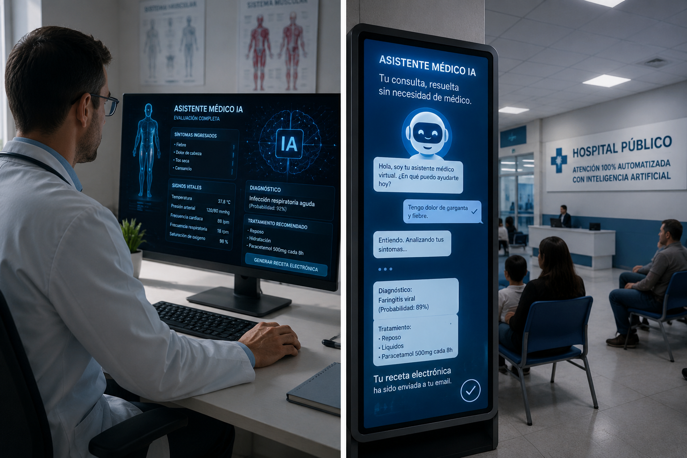

SALUD
Nuevo sistema de inteligencia artificial promete reducir un 60 % los tiempos de espera en hospitales públicos
El Ministerio de Salud presentó un programa piloto que utilizará inteligencia artificial para dar el diagnóstico a los pacientes sin ningún tipo de consulta médica. La iniciativa comenzará, según el anuncio, el próximo mes en más de cinco hospitales de todo el país.

Con el objetivo de agilizar la atención y optimizar los recursos del sistema sanitario, el Ministerio de Salud anunció la implementación de un sistema de inteligencia artificial capaz de realizar una evaluación completa a los pacientes que ingresen al hospital. Los usuarios responderán una serie de preguntas sobre sus síntomas y el sistema analizará la información para determinar el nivel de urgencia, emitir un diagnóstico y sugerir un plan de tratamiento sin necesidad de una consulta médica tradicional.
"Los avances en inteligencia artificial nos permiten confiar en un sistema capaz de evaluar síntomas, interpretar estudios clínicos y emitir un diagnóstico con un nivel de precisión superior al promedio humano. Esta tecnología marcará el inicio de una nueva etapa en la atención sanitaria, donde la consulta médica tradicional dejará de ser necesaria para la mayoría de los casos."
Según el comunicado oficial emitido por el Ministerio de Salud, la inteligencia artificial podrá analizar más de 250 síntomas, interpretar estudios de laboratorio e imágenes médicas, acceder al historial clínico del paciente y emitir un diagnóstico junto con la receta electrónica correspondiente en menos de diez minutos, reduciendo significativamente los tiempos de espera.
Los hospitales mantendrán personal de enfermería para realizar controles físicos y asistir a los pacientes, mientras que los médicos solo intervendrán en procedimientos quirúrgicos o en casos de extrema complejidad que el sistema no pueda resolver de forma autónoma.
¿Qué pasará ahora?
Las autoridades informaron que el programa piloto será evaluado durante los próximos seis meses para medir su impacto en la calidad de la atención y en la reducción de los tiempos de espera. Si los resultados son favorables, la iniciativa podría extenderse gradualmente al resto de los hospitales públicos del país.